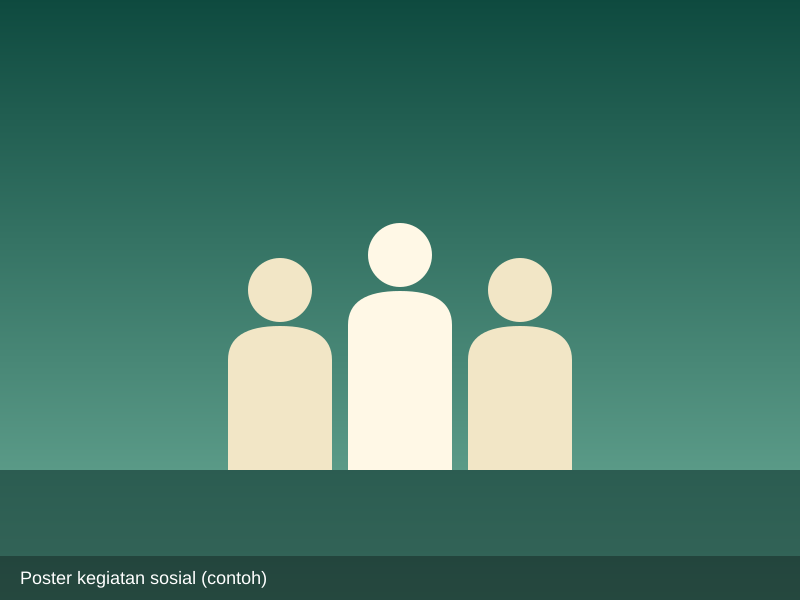
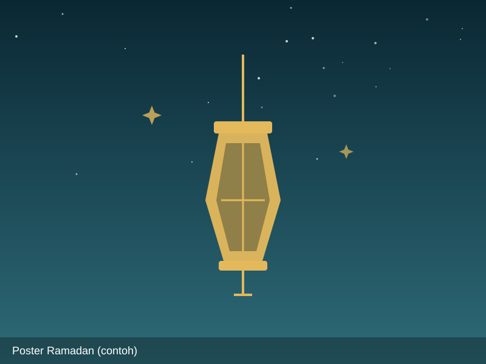
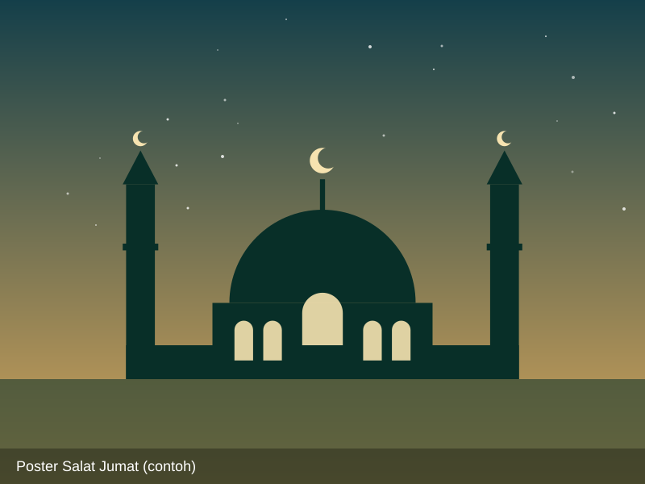
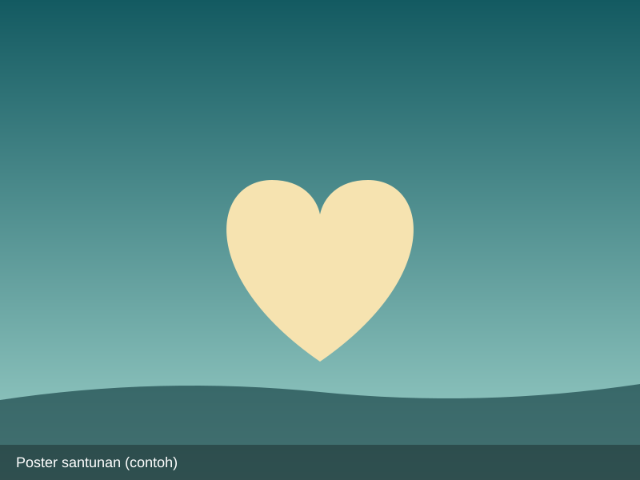
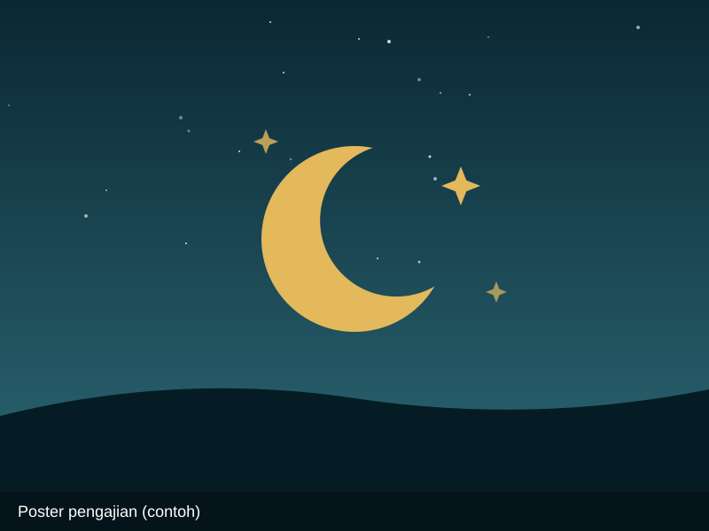

Kajian Rutin
Kajian Rutin Ahad Pagi
Kajian tematik rutin terbuka untuk umum jamaah putra dan putri, menghadirkan asatidz berkompeten dan diakhiri sarapan bersama.
Kajian Ahad Pagi, pelayanan musafir 24 jam, I'tikaf Ramadhan berfasilitas, dan program sosial umat.
Kajian tematik rutin terbuka untuk umum jamaah putra dan putri, menghadirkan asatidz berkompeten dan diakhiri sarapan bersama.

Disediakan kopi/teh hangat gratis, kasur tidur sejenak, Wi-Fi kencang, dan tempat wudhu bersih higienis bagi pelintas jalur Solo-Semarang.

I'tikaf gratis berfasilitas kasur tidur (kuota terbatas), qiyamul lail berjamaah, serta hidangan buka puasa dan santap sahur cuma-cuma.

Menampung jamaah warga lokal dan pengendara jalur antar-kota dengan fasilitas parkir luas dan penitipan alas kaki yang aman.

Pemberian santunan beasiswa tunai dan sembako bagi anak yatim dan keluarga dhuafa binaan PDM/PCM di kawasan Ampel dan Gladagsari.

Shalat fardhu berjamaah dengan imam rawatib, dilengkapi fasilitas jamak-qashar bagi musafir yang menempuh safar.
Tidak ada kegiatan pada kategori yang dipilih.